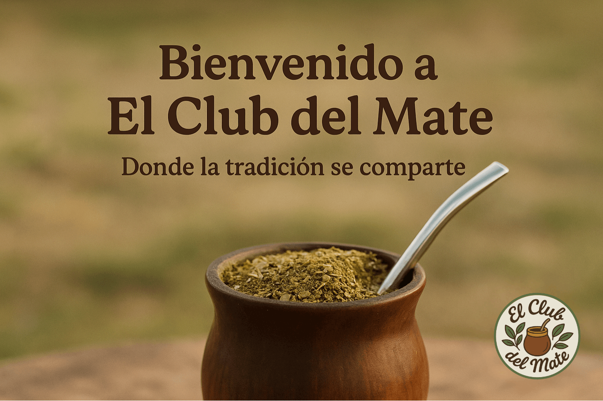

Quiénes Somos
Somos El Club del Mate, una tienda universitaria dedicada a compartir la pasión por el mate y su cultura. Descubre nuestra historia y conoce a nuestro equipo.
Nuestra Historia
El Club del Mate nació como un proyecto universitario con el objetivo de acercar la cultura del mate a estudiantes y curiosos. Inspirados por la tradición y el valor de compartir, creamos una tienda donde cada producto cuenta una historia y cada mate une personas.
Desde nuestros primeros encuentros, supimos que el mate era más que una bebida: es un símbolo de amistad, comunidad y raíces. Hoy, seguimos creciendo y aprendiendo juntos.

Nuestro Equipo
Más información: Experto en desarrollo frontend y backend, fan de la programación y el mate amargo.
Más información: Apasionado por el diseño gráfico y la comunicación visual. Le encanta innovar en cada proyecto.
Más información: Investigador de la cultura del mate y escritor de artículos para el blog del club.
Más información: Coordinadora de eventos y actividades, experta en logística y atención al cliente.
Más información: Especialista en tecnología y automatización, siempre dispuesto a ayudar y mejorar procesos.
Curiosidades del Mate
- El mate es la segunda bebida más consumida en Argentina después del agua.
- La palabra "mate" proviene del quechua "mati", que significa calabaza.
- Compartir un mate es símbolo de amistad y confianza.
- Existen más de 50 formas de preparar el mate, ¡cada región tiene su estilo!
- El mate contiene antioxidantes y ayuda a la concentración.